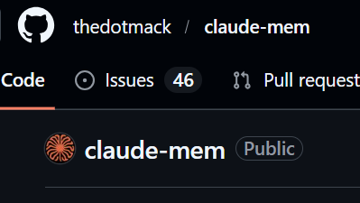
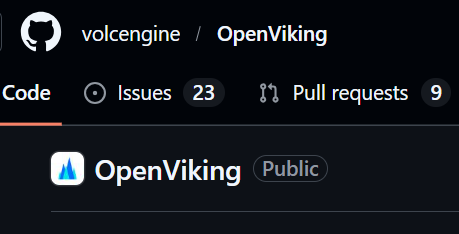
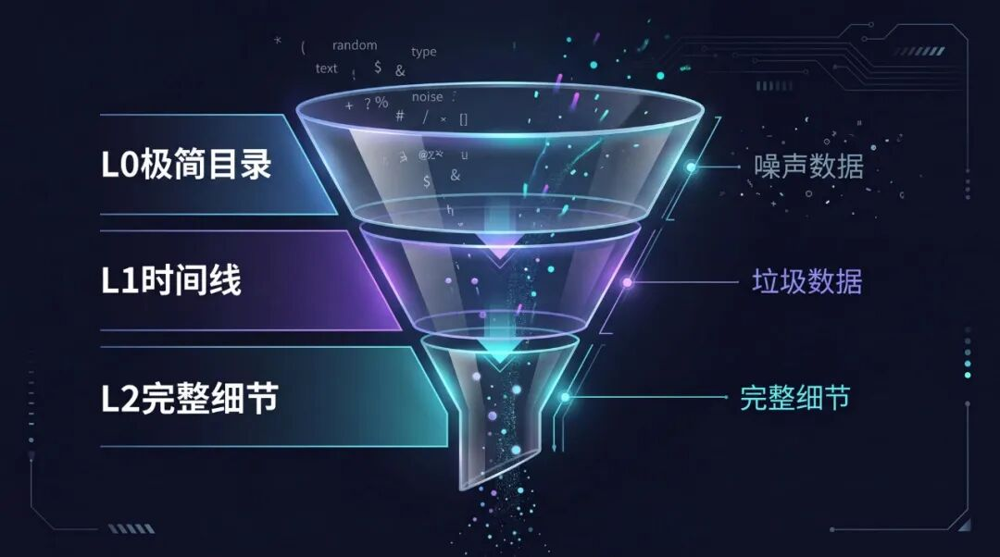
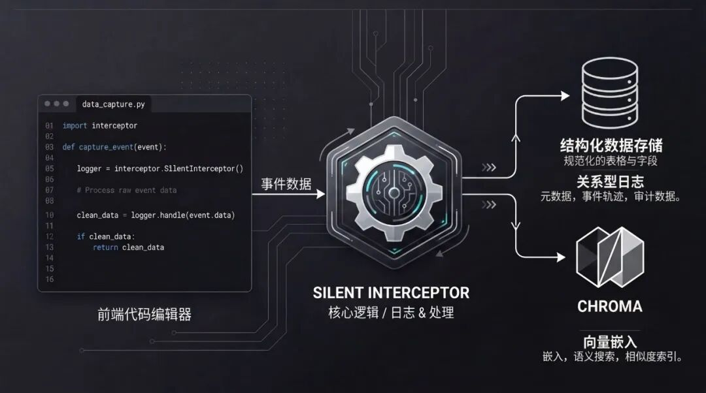
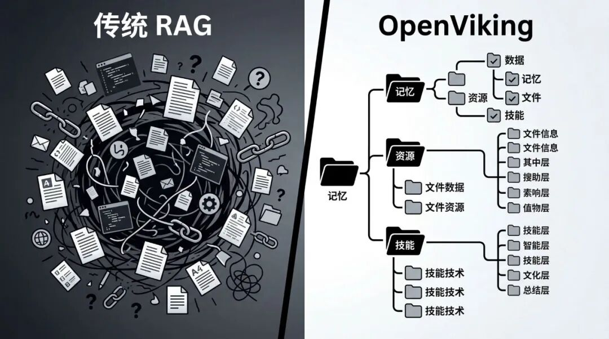
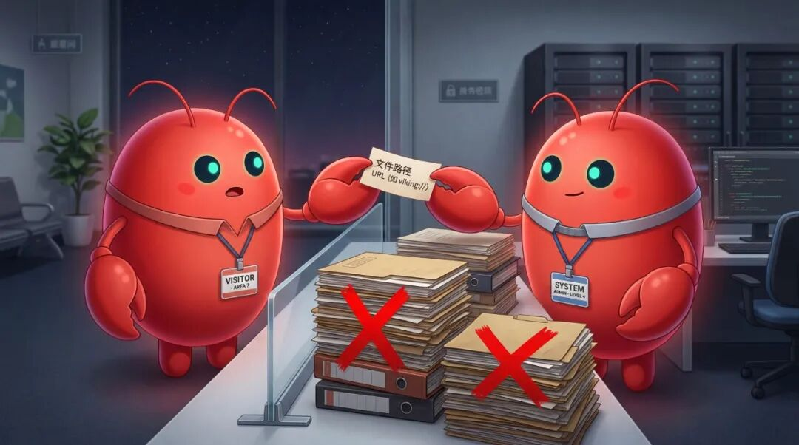
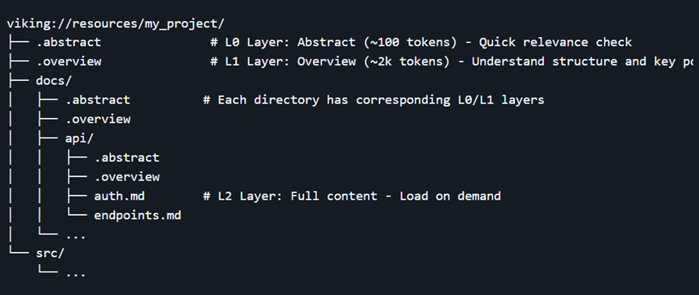
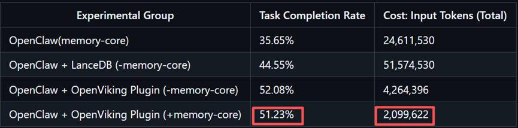

最近后台一堆人在跟我吐槽，说自己本地跑的 Openclaw，也就是大龙虾，简直就是个让人又爱又恨的矛盾体。
刚开始写代码、跑任务的时候，它聪明得像个资深架构师。 但只要战线一拉长，这货就开始疯狂暴露它极其致命的两个工程痛点。
第一，是让人绝望的金鱼记忆
稍微懂点底层逻辑的人都知道，大模型本身是无状态的，它没有真正的长期记忆。像 OpenClaw 这样的 Agent，到底是怎么记住你提过的需求的？它其实只能通过把历史对话，以及项目专属的 Memory 文件（memory.md），每次都死皮赖脸地重新拼进 Prompt 里，来模拟出一种短期记忆。 但只要战线一拉长，这只大龙虾就开始犯病了。
第二，是直接原地爆炸的 Token 账单
传统 Agent 框架为了强行维持这种所谓的记忆，通常会把历史对话，以及部分工具调用日志（Tool Logs），不断地重新拼接进下一次请求的 Prompt 里。
很多外行人以为这只是字数变多的问题，但真正懂 Agent 工程的人都知道，这里最致命的其实是信息密度。
你想想，你让大龙虾去修个 Bug，它跑个 shell 命令，哗啦啦返回 5000 个 Token 的冗余报错日志；再跑个 grep 检索，又糊上来 2000 个 Token 的代码片段。这些未经提纯的杂乱输出被塞进上下文后，里面真正有效的信息可能连 5% 都不到！
随着任务的推进，无效上下文迅速膨胀，信噪比急剧下降。这不仅极易导致模型被噪声淹没、产生误判甚至幻觉，API 的计费账单更是会直接飙升到让人心梗的程度。
如果不做极深的额外工程优化，这套默认机制几乎很难直接落地到真正的企业级生产环境里啊？？？
想要让手里的大龙虾真正进化成具备长期规划能力的超级智能体，咱们必须得给它动个大手术——从底层重构它的记忆机制。
最近我花了好几天时间，深扒了 GitHub 上的两个神仙级开源项目：
cluade-mem和openviking。


看完之后，我只能说，大受震撼。
它们分别针对单个Agent的记忆压缩，和一群Agent的协同系统，给出了堪称教科书级别的解法。
今天，咱们就来硬核拆解一下，这两个能让你的龙虾智商暴增、Token 消耗狂降 96% 的开源神器。
神器一：claude-mem。
单个Agent的极致渐进式外脑
咱们先解决龙虾单兵作战时的记忆问题。
很多人一想到给单体 Agent 加记忆，第一反应就是上 RAG（检索增强生成），搞个向量数据库。
但传统 RAG 有个致命缺陷：它太扁平了。
它会把大量充满噪声的废弃代码、闲聊记录一股脑地全召回给你，这只会进一步拉低信息密度，让龙虾越活越懵。
而claude-mem这个项目，提供了一种极其优雅的工程解法。 虽然它最初是跑在 Claude Code 上的插件，但它的这套核心机制，简直完美切中了咱们调教单只 OpenClaw 的痛点。
它到底牛在哪？
首先，是极其克制的渐进式上下文披露
为了省下那极其昂贵的 Token，claude-mem 采用了一种精妙的“三层检索工作流”。

当大龙虾需要回忆过去时，系统绝不会把几万字的历史记录直接糊它脸上。相反，它会先给龙虾搜索出一个极其精简的索引目录（单条消耗极少 Token）。
接着，如果需要，它拉取时间线。最后，只有当龙虾明确判断某条记录对当前任务有核心价值时，才会通过特定 ID 去拉取完整的细节。
这种先看目录再翻书的机制，把那 90% 的无效废话全挡在了外面，直接把 Token 成本压缩了整整 10 倍。
其次，是无感知的全自动生命周期监听。
它底层拦截了 5 个关键的生命周期事件。你在前面专心敲代码，它的后台 Worker 服务就在静默捕获大龙虾的所有操作。然后，它会调用大模型把冗长的操作流提炼成高密度的语义摘要，存进 SQLite 和 Chroma 的双数据库混合存储里。

你甚至可以在本地打开它的 Web UI 控制台，像刷朋友圈一样，实时看着你的单只大龙虾是怎么形成高质量记忆流的。
神器二：OpenViking。
一群龙虾的操作系统底座
如果说 claude-mem 是给单只龙虾装了个超级外脑。 那么，当你试图用一群龙虾（多智能体集群）来协同干一个大项目时，情况就会变得彻底失控。
龙虾A的输出传给龙虾 B，如果传统做法还是硬塞 Prompt 或者丢进同一个扁平数据库。那么多轮交互下来，不仅上下文随时溢出，出错时连 Debug 都找不到是哪只龙虾的记忆被污染了，整个链路宛如一个巨大的黑盒。
这就到了 OpenViking 登场的时候了。 这是火山引擎开源的一个怪物级项目，专门为 AI Agent 设计的企业级上下文数据库。
OpenViking 做了一个极其违背祖宗决定：它彻底抛弃了传统 RAG 碎片化的向量存储，首创了文件系统范式（File System Paradigm）。

它把这群龙虾需要的记忆（Memories）、资源（Resources）和技能（Skills），全部变成了树状的目录结构！ 这意味着，你可以像管理电脑硬盘一样，用 viking://resources/Agent_A_logs/ 这样的路径，去统一管理这群 AI 的大脑。
它带来的降维打击是全方位的：
1. 物理隔离与逻辑互通的工作区
在多龙虾协作时，你可以轻松划定私有目录和公共目录。 负责找资料的龙虾把抓取的数据丢进公共目录，负责写代码的龙虾只去那个目录里读。彻底隔离了无用的工具执行日志，终结了多 Agent 之间的记忆污染。

2. 传递指针而不是全文
这也是它最恐怖的地方。它支持 L0/L1/L2 的分级上下文加载。

龙虾之间交接任务，再也不用把几万字的全文传一遍了，而是直接传一个上下文路径或目录摘要。接收任务的龙虾自己顺着树状目录递归拉取真正需要的那 5% 的细节就行了。
3. 黑盒终结者：可视化检索轨迹
一群龙虾协作报错了怎么办？在 OpenViking 里，检索轨迹是完全可视化的。你能像看系统日志一样，清清楚楚地看到龙虾 C 是怎么顺藤摸瓜，从哪个具体目录里掏出了一段错误代码的。Debug 变得极其丝滑。
最后，咱们来看一组官方给出的，基于 OpenClaw 的实测数据：
接入 OpenViking 后，OpenClaw 在长程对话测试集上的任务完成率，从原本可怜的 35.65%，直接飙升到了 51%~52%！
更夸张的是，相比于使用传统的记忆库，由于这套牛逼的文件范式和分级加载机制，输入 Token 的成本，断崖式下降了约 96%！！！

写在最后
看完这两个项目，我其实有很深的感触。
在 AI 爆发的这两年，我们总是习惯用大力出奇迹的思维去解决问题：上下文被截断？那就塞更多的 Prompt；找不准资料？那就换更贵的向量数据库。
但这套逻辑，在真正复杂的工程化面前，特别是龙虾这种东西，是绝对行不通的。
Claude-mem 和 OpenViking 给我们指明了一条完全不同的路。 它们不再用简单处理字符串的思维去搞 AI，而是用构建操作系统底座的工程化思维去管理 Agent 的状态和信息密度。
无论是单只龙虾，还是一群龙虾，精细化的上下文生命周期管理，才是 AI 走向真正成熟的标志。
如果你现在还在为大模型的 API 账单心滴血，或者正在被你那群患有健忘症的大龙虾折磨得死去活来。听我一句劝，立刻去 GitHub 把这两个项目扒下来研究透。
它们不仅能省下大把的真金白银，更重要的是，它们能让你看到，真正的企业级 AI 工作流，到底该长什么样。
以上。
既然看到这里了，如果觉得这篇硬核的技术拆解对你有所启发，随手点个赞、在看、转发三连吧。 如果想第一时间收到关于 AI 工程化前沿的探讨推送，也可以给我个星标 ⭐
谢谢你看我的文章，我们，下次再见。
-END-